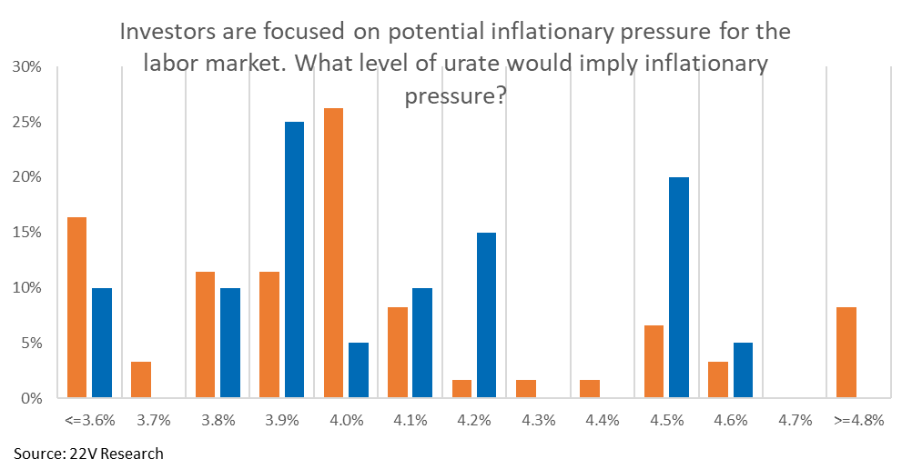
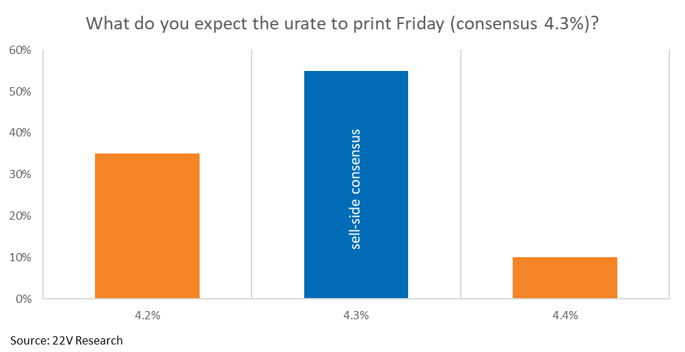
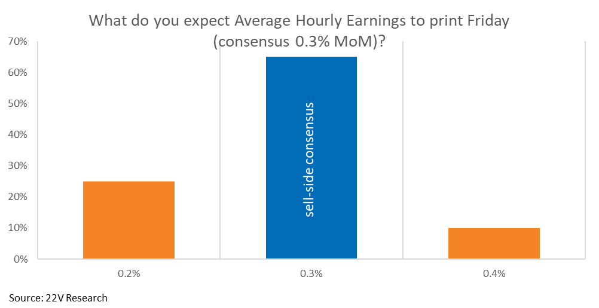
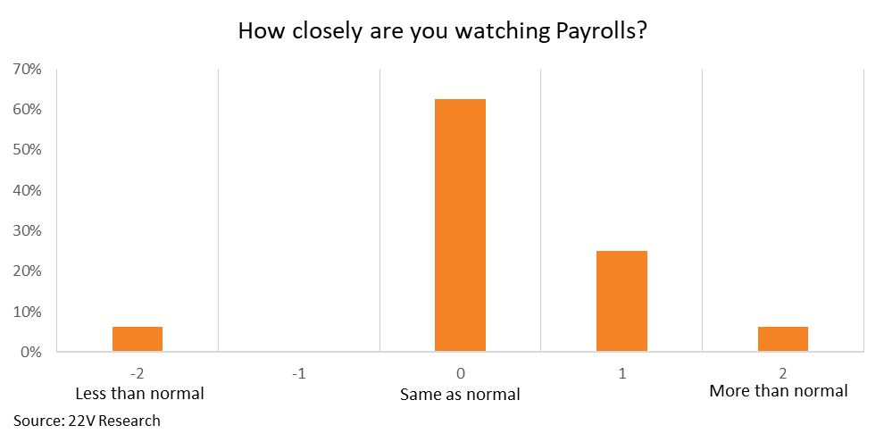

A60-Second Verdict
This was a useful pre-payrolls reaction-function signal, but because the event date has passed, it should be archived as macro context rather than treated as a live action.
- Core finding: investors expected strong employment data to be risk-off because it could pressure rates and Fed policy.
- Key thresholds: payrolls above roughly 120k were framed as risk-off; below 100k as risk-on.
- Survey consensus: investors expected payrolls around 110k versus Bloomberg consensus of 85k.
- Action value now: not a trade signal today, but useful for understanding market sensitivity to labor data and rates.
Processor Decision
BSignal Scorecard
Maturity Sliders
CBasic Information
| Field | Value |
|---|---|
| Title | 22V Surveys: Investor Expectations Skew Towards Employment Data Beats |
| Author / sender | Dennis DeBusschere, Kevin Brocks, Sophia Wang, 22V Research |
| Received | 2026-06-04 18:32:31 Europe/Zurich |
| Message ID | <9lxg2PWFQieKQeYH_tgOyw@geopod-ismtpd-11> |
| Processed content | Email body and selected embedded survey charts. |
| Not processed | Linked website/PDF version and post-event market outcome were not checked in this run. |
DContent Extraction
| Survey Point | Plain-English Explanation | Use |
|---|---|---|
| Risk-off skew | A meaningful share of investors expected stronger employment data to hurt markets. | Macro reaction-function record. |
| Payroll threshold | Above about 120k was viewed as risk-off; below 100k as risk-on. | Event threshold archive. |
| Unemployment threshold | Lower unemployment was interpreted as inflation/rate pressure; higher unemployment as easing pressure. | Rate-sensitive portfolio context. |
| Survey vs consensus | Investor payroll expectations were above Bloomberg consensus. | Positioning and surprise-risk context. |
EContent Evaluation
| Dimension | Assessment | RAG |
|---|---|---|
| Plausibility | High. The rate-sensitive reaction logic is clear. | Green |
| Evidence strength | Medium. Survey details are concrete, but the underlying sample and post-event outcome were not checked. | Amber |
| Decision readiness | Low today. The event date passed before this intake run. | Red |
FInvestment Impact
| Area | Impact | Confirmation Score | Implication |
|---|---|---|---|
| Macro/rates thesis | Confirms that labor strength can be interpreted as rate pressure in the current regime. | 7/10 | Useful for future macro calendar checks. |
| Equity risk appetite | Shows a possible "good news is bad news" setup around payrolls. | 6/10 | Use as context, not as current positioning. |
| Portfolio action | No concrete portfolio action today because the event is stale. | 2/10 | Archive and use for pattern analysis. |
GConcrete Actions
Tag with payrolls, rates, risk-off threshold, and survey expectations.
The source was time-sensitive and the relevant payroll event has passed.
Compare the actual payroll release and market reaction to the survey thresholds to improve pattern learning.
HDetailed Appendix For Understanding
This appendix explains why the signal mattered at the time and how it should be used now.
Chart Pack




The survey was about how markets would react, not only what the data would be.
The most useful part is the reaction function. Investors were not simply forecasting payrolls; they were saying what type of payroll number would likely be interpreted as good or bad for markets.
Strong jobs data can be negative when investors worry about rates.
Normally, strong employment sounds positive. In a rate-sensitive market, it can become negative because it may keep inflation pressure alive and make the Federal Reserve less willing to ease policy.
The value today is pattern learning, not immediate action.
Because the payroll event has already passed, the email should not drive current positioning. Its value is to improve the system's memory of how investor expectations and thresholds looked before a macro event.
ISource Handling
Recorded from Apple Mail mailbox Research Signals - New. The email was moved to Research Signals - Processed after signal capture. Obsidian note created at DragonShield Research Obsidian/01 Signals/2026/2026-06/2026-06-04 22V - Payroll Survey Risk Reaction.md.